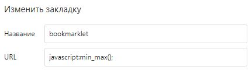
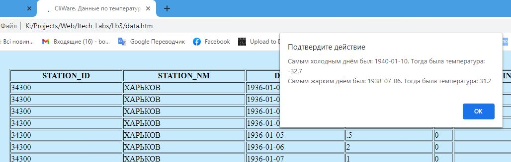

Имеется страница с данными о температуре. Написать скрипт (можно в виде букмарклета), выводящий информацию о самом жарком/холодном дне.
Информацию о самом жарком/холодном дне будет выведена, когда вы перейдете по этой ссылке. Однако надо быть терпеливым - страница грузится очень долго. Исходный код этой страницы насчитывает 76 тысяч строк - не удивительно что долго.
После загрузки страницы должно быть выведено уведомление о самом жарком/холодном дне.
Если вы хотите запустить скрипт ещё раз, вы можете сделать это при помощи букмарклета:
Как видите, код в поле URL совсем мал:
javascript:min_max();
min_max() - это функция, которая находится в файле script.js.
Результат должен быть таким:
